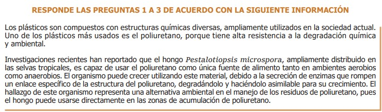

1.Debido a la resistencia a la degradación que tiene el poliuretano, actualmente, algunos desechos de poliuretano se incineran en hornos especiales a temperaturas superiores a 500 °C, con la consecuente emisión de CO2. Además de la reducción de la emisión de CO2, ¿qué otra ventaja tiene el uso de Pestalotiopsis microspora, mediante aplicación directa, respecto a la incineración de residuos?

De los anteriores medios, ¿cuáles serían los más adecuados para cultivar únicamente el hongo de interés?

3.Un ambientalista le pregunta a un investigador si es posible extender el uso del hongo Pestalotiopsis microspora para degradar todos los plásticos de uso común. Teniendo en cuenta la información anterior, ¿qué debería responder el investigador?